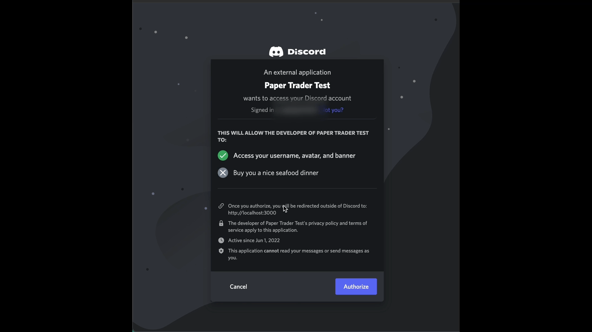

40/100 Days of Code
Paper Trader
Finished the Express Error Handling PR and merged to main!
- Managed to figure out how to have the two
axiosrequests to the Discord API be two separatetry catchblocks.- My previous attempts would just have
next()in the catch block, where if the first request to Discord/tokenfails a request is still made to Discord/userswhen it should have even be attempted. - The solution was to use
return next(), which is explained very well in this discussion here as to why this is necessary.
- My previous attempts would just have
Now that the backend API has errors, time to start implementing some of that error handling in the frontend React client too.
- I opted to not use React boundaries as that’s more for components encountering errors, rather than API requests or server requests causing errors.
- The first challenge was trying to get the errors to be caught in the right component for logging in.
- First, I had to remove the try catch blocks in my class methods that make requests to my backend.
- Then in my
Logincomponent, I wrapped the function call in atry catchblock.- Note,
handleLoginis passed down from the parentAppcomponent and is a promise (due to being returned fromuseCallback). Before, I didn’t awaithandleLoginwhich caused my catch block to never trigger as there was no error to catch yet.
- Note,
- However, there are two points of failure during the login process, one being a CSRF attack/clickjacking and another being issues with requests from Discord’s OAuth API.
- This meant having to use conditionals to display a relevant message for the issue.
- If it’s a CSRF issue, they should just try to login again as the state string is reset.
- If it’s a Discord API issue, then they should try logging in later.
- Also note that the search parameters are reset if an error occurred. This is to clean the URL so the old
stateparameter isn’t reused and so refreshing the page doesn’t callhandleLoginagain (which is called if there is acodeparameter).
useEffect(() => { async function loadUser() { if (authCode !== undefined) { try { await handleLogin(); } catch (error) { if (error instanceof StateError) { localStorage.removeItem('csrfStateString'); UserSession.storeCsrfStateString(); setErrors("There was an issue with your request. Please try again."); } if (error instanceof AxiosError) { setErrors("There's an issue with getting your profile information. Please try again later."); } setSearchParams(""); } } } loadUser() }, [handleLogin, authCode, setSearchParams]); - This meant having to use conditionals to display a relevant message for the issue.
- To display the information, I used conditional values and Evergreen UI’s
Alertcomponent.- A small tricky part was figuring out the conditionals to properly show the appropriate components, when there is an error and have been redirected, when there is no error and hasn’t been redirected, etc.

Next Steps
- Write up a retrospective on the Express Errors? Might combine it with the React errors if it’s not that big.
- Open the React errors PR.